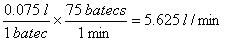
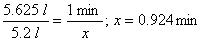
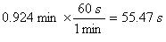

Solució Activitat funcions
|
Solució
|
1.



|
|
2.
La gràfica B
|
|
3.
Passa de 70 a 20 mm Hg. La zona de
caiguda de pressió més gran és de les artèries als capil·lars
|
|
4.
Representació de la recta F=220-E
|
|
5.
Per 20 anys, a les sessions de
recuperació, tenim:
Mínim: 200 · 0.5= 100
Màxim: 200 · 0.6= 120
Etc.
|
|